FaceSwap4UE 技术文档
简介
在虚幻引擎中，场景里有一角色，上传一张自定义的头像图片，将上传的脸替换到场景里的角色上，并保存为图片。
本项目基于FaceFusion，项目地址 https://github.com/facefusion/facefusion
架构示意
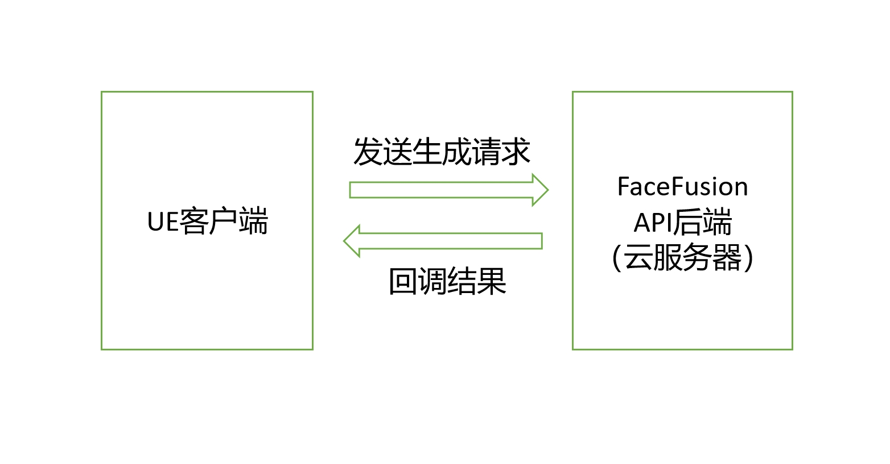
ue客户端发送生成请求至FaceFusion后端，并回调结果。
参数：
参考头像
要替换的目标图片
返回
替换好的图片
运行要求
操作系统：Windows 10 +
NVIDIA显卡
后端部署
一、安装CUDA
1、检查电脑的NVIDIA版本
首先先按 Win键 + R键，打开Windows命令运行框，并输入 cmd
回车（Enter）打开Windows控制台命令窗口，输入 nvidia-smi 回车得到以下窗口

这里的12.3就是驱动对应的最高版本，我们所安装的CUDA版本小于等于它即可
2、下载所需CUDA版本
选择任意版本号小于等于上述最高版本的即可
CUDA下载官网 https://developer.nvidia.com/cuda-toolkit-archive
3、CUDA安装
运行下载好的程序，等待安装即可完成
4、检查是否成功安装
打开Windows控制台命令窗口，输入 nvcc -V （注意-前有空格）回车得到以下窗口

安装成功
二、安装cuDNN
1、下载所需cuDNN版本
选择跟自己的cuda版本适配的cuDNN版本
cuDNN下载官网 https://developer.nvidia.com/rdp/cudnn-download
2、配置环境变量
我们先把下载的 cuDNN 解压缩，会得到下面的文件

下载后发现其实cudnn不是一个exe文件，而是一个压缩包，解压后，有三个文件夹，把三个文件夹拷贝到cuda的安装目录下
CUDA 默认的安装路径如下
C:\Program Files\NVIDIA GPU Computing Toolkit\CUDA\v10.1
拷贝时看到，CUDA 的安装目录中，有和 cuDNN 解压缩后的同名文件夹，这里注意，不需要担心，直接复制即可。cuDNN 解压缩后的同名文件夹中的配置文件会添加到 CUDA安装目录中的同名文件夹中
cuDNN 其实是 CUDA 的一个补丁，专为深度学习运算进行优化的。
往系统环境变量中的 path 添加如下路径（根据自己的路径进行修改）
C:\Program Files\NVIDIA GPU Computing Toolkit\CUDA\v10.1\bin
C:\Program Files\NVIDIA GPU Computing Toolkit\CUDA\v10.1\include
C:\Program Files\NVIDIA GPU Computing Toolkit\CUDA\v10.1\lib
C:\Program Files\NVIDIA GPU Computing Toolkit\CUDA\v10.1\libnvvp
3、验证配置是否成功
配置完成后，我们可以验证是否配置成功，主要使用CUDA内置的deviceQuery.exe 和 bandwidthTest.exe：
首先win+R启动cmd，cd到安装目录下的 …\extras\demo_suite
输入 .\deviceQuery.exe 命令，观察窗口输出结果。
继续输入 .\bandwidthTest.exe 命令，两条命令都出现 PASS 说明 cudnn 环境配置成功。
三、本地部署后端
将后端压缩包解压缩，任意路径均可以
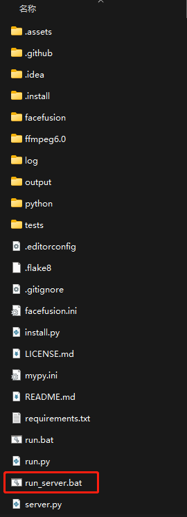
双击运行run_server.bat，弹出下面窗口
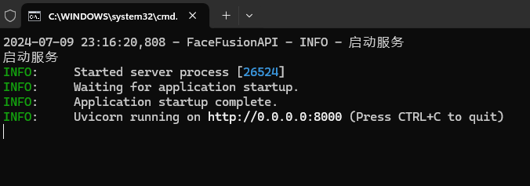
后端部署完成
插件安装
安装要求
虚幻引擎版本：Unreal Engine 5.3
操作系统：Windows 10 +
接下来从以下两种可选方式安装
从IDE中进行源码构建
从IDE（VS、Rider）中进行源码构建请遵从以下步骤：
在项目目录中创建
Plugins文件夹将插件移动到Plugins目录下
刷新解决方案
启动编译
预编译
在项目目录中创建
Plugins文件夹将预编译好的插件移动到Plugins目录下
启动项目
此时打开插件面板，可以看到FaceSwap4UE插件已启用

蓝图节点
总览
搜索 faceswap，出现以下函数
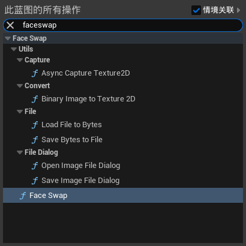
共分为五大类
Capture：捕获截图
Convert：转换
File：读写
File Dialog：选择文件
Face Swap：换脸服务
Face Swap
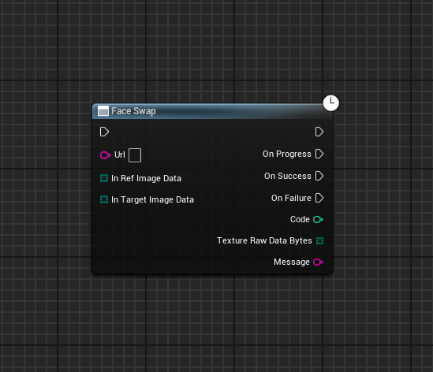
Face Swap节点为蓝图异步节点
| 输入引脚 | 类型 | 说明 |
|---|---|---|
| Url | 字符串 | FaceFusion服务器地址，不需要路由地址，连接地址 例如 http://127.0.0.1:8000，后面不带斜杠 |
| In Ref Image Data | 字节数组 | 输入的头像二进制数据，注意是图像，不是Texture2D |
| In Target Image Data | 字节数组 | 输入的目标图像二进制数据，注意是图像，不是Texture2D |
| 输出引脚 | 类型 | 说明 |
|---|---|---|
| On Progress | 执行 | 正在生成 |
| On Success | 执行 | 生成成功 |
| On Failure | 执行 | 生成失败 |
| Code | 整数 | 状态码，参考下面状态码说明 |
| Texture Raw Data Bytes | 字节数组 | 生成的图像二进制数据，可以存为png（服务器默认图像压缩格式）或是通过网络传输 |
| Message | 字符串 | 处理消息 |
| 状态码 | 含义 | 说明 |
|---|---|---|
| 200 | 请求成功 | 服务器正常完成请求 |
| 201 | 请求已创建 | 正在生成的时候会返回，表示服务器已接受并开始处理 |
| 400 | 请求参数错误，服务器拒绝处理 | 通常为客户端的图像参数有误，例如图像为空 |
| 404 | 无法找到服务器 | 服务器不在线或客户端断网 |
| 500 | 服务器内部错误，无法完成请求 | 生成出错了 |
| 502 | 作为网关或代理角色的服务器，从上游服务器中接收到的响应是无效的 | 代理服务器例如Nginx正常响应，但FaceFusion不在线 |
| 其他 | 网络上查资料 |
Capture
Async Capture Texture2D

Async Capture Texture2D节点为蓝图异步节点
不会捕获UI，图像分辨率为当前视口分辨率
| 输出引脚 | 类型 | 说明 |
|---|---|---|
| On Success | 执行 | 截图成功 |
| On Fail | 执行 | 截图失败 |
| Out Texture | Texture2D | 截图的纹理2D |
| Out Binary Image | 字节数组 | 截图的图像二进制数据 |
Convert
Binary Image to Texture 2D

工具函数，用于转换二进制图像到Texture2D，支持常见的图像格式，png、jpg、bmp等
| 输入引脚 | 类型 | 说明 |
|---|---|---|
| Binary Image | 字节数组 | 图像二进制数据 |
| 输出引脚 | 类型 | 说明 |
|---|---|---|
| Texture2D | Texture2D | 转换后的纹理 |
File
Load File to Bytes

工具函数，加载本地的文件到字节数组
| 输入引脚 | 类型 | 说明 |
|---|---|---|
| File Path | 字符串 | 文件路径 |
| 输出引脚 | 类型 | 说明 |
|---|---|---|
| Success | 布尔 | 是否成功，文件不存在时会返回假 |
| Out Data | 字节数组 | 二进制数据 |
Save Bytes to File
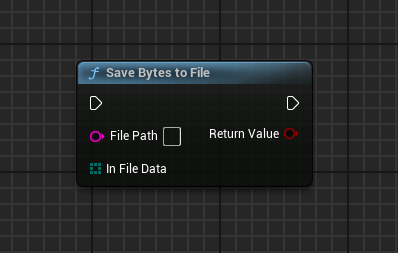
工具函数，保存字节数组到本地的文件，可覆盖
| 输入引脚 | 类型 | 说明 |
|---|---|---|
| File Path | 字符串 | 要保存的文件路径 |
| In File Data | 字节数组 | 二进制数据 |
| 输出引脚 | 类型 | 说明 |
|---|---|---|
| Return Value | 布尔 | 是否成功 |
File Dialog
Open Image File Dialog
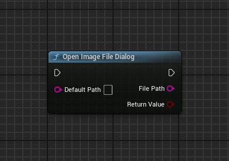
打开图像文件选择对话框（仅运行时）
支持png、jpg、bmp等格式
| 输入引脚 | 类型 | 说明 |
|---|---|---|
| Default Path | 字符串 | 默认路径 |
| 输出引脚 | 类型 | 说明 |
|---|---|---|
| File Path | 字符串 | 选择的文件路径 |
| Return Value | 布尔 | 是否已选择，如果取消就返回假 |
Save Image File Dialog
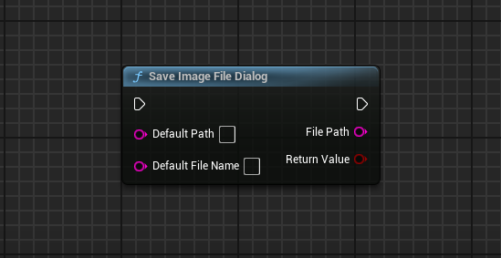
保存文件选择框（仅运行时）
该节点只保存PNG格式图像（FaceFusion服务器默认图像压缩格式）
| 输入引脚 | 类型 | 说明 |
|---|---|---|
| Default Path | 字符串 | 默认路径 |
| Default File Name | 字符串 | 默认文件名（不带扩展名） |
| 输出引脚 | 类型 | 说明 |
|---|---|---|
| File Path | 字符串 | 保存的文件路径 |
| Return Value | 布尔 | 是否已保存，如果取消就返回假 |
示例
下面演示使用以上蓝图节点组合的最小示例
进入插件内容，打开Map_Demo关卡，运行

打开蓝图示例 WBP_Main
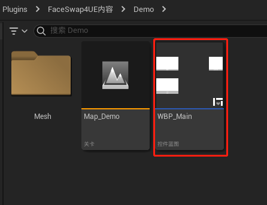
蓝图示例如下

场景截图
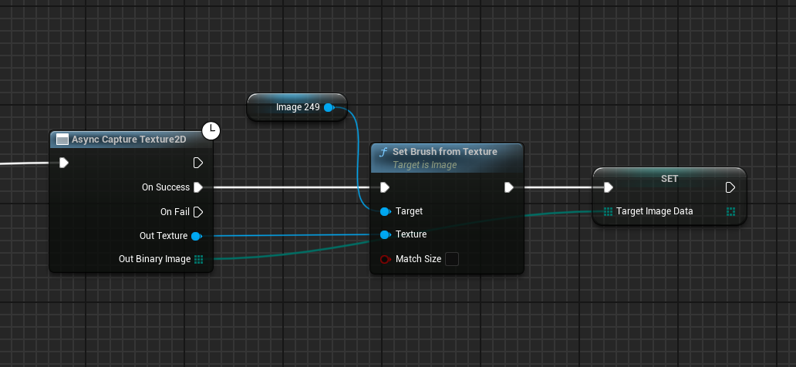
上传头像
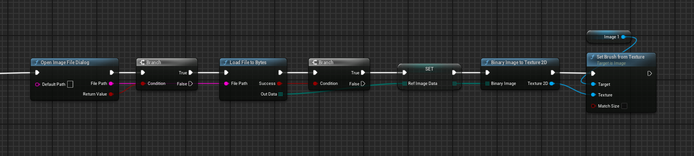
换脸

换脸所使用的字节数组为图像二进制数据
保存结果图像
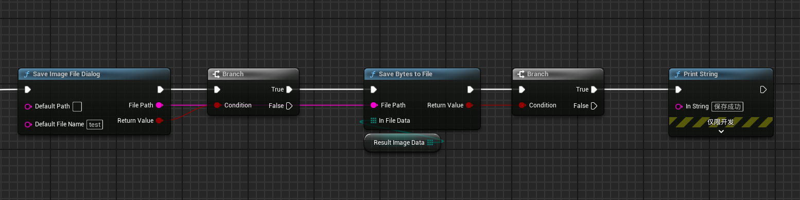